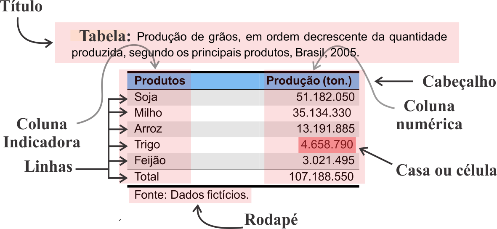

2 Coleta, Organização e Apresentação de Dados
2.1 Introdução
O material básico com que o pesquisador trabalha são os dados provenientes de variáveis, sendo que a coleta destes é o passo inicial na avaliação estatística de uma pesquisa. Os dados da forma como foram coletados representam os dados brutos, e sempre se apresentam desordenados. Os dados colocados em ordem crescente ou decrescente representam os dados elaborados.
O passo seguinte é sintetizar os valores que uma ou mais variáveis podem assumir, para que se tenha uma visão global da variação dessa ou dessas variáveis. Inicialmente esses valores são apresentados em tabelas e gráficos, que irão nos fornecer rápidas e seguras informações a respeito das variáveis em estudo.
2.2 Representação Tabular
Uma tabela é um quadro que resume um conjunto de dados. Segundo Crespo (2009), uma tabela pode ser dividida em duas partes: principais e secundárias. As partes principais são:
- Corpo: Conjunto de linhas e colunas que contêm informações sobre a variável em estudo.
- Cabeçalho: Parte superior da tabela que especifica o conteúdo das colunas.
- Coluna indicadora: Parte da tabela que especifica o conteúdo das linhas.
- Linhas: Retas imaginárias que facilitam a leitura no sentido horizontal, de dados que se inscrevem nos seus cruzamentos com as colunas.
- Casa ou célula: Espaço destinado a um só valor.
As partes secundárias são:
- Título: Conjunto de informações as mais completas possíveis. Deve responder as seguintes perguntas: O quê? Quando? Onde?, relativas à variável estudada.
- Rodapé: É um espaço na parte inferior da tabela utilizado para colocar informações necessárias referentes aos dados.
- Fonte: É a indicação da entidade responsável pela elaboração da tabela. Deve ser colocada no rodapé, no final da tabela. Esse procedimento garante a honestidade científica e serve como indicativo para posteriores consultas.
- Notas: Também podem ser colocadas no rodapé, depois da fonte, de forma sintética. As notas têm caráter geral, referindo-se à totalidade da tabela. Devem ser enumeradas em algarismos romanos, quando existirem duas ou mais.
- Chamadas: As chamadas têm caráter particular, referindo-se a um item específico da tabela. São enumeradas em algarismos arábicos, entre parênteses.
A seguir será abordado o Exemplo 2.1 para se observar o desenvolvimento de uma tabela.
Exemplo 2.1 Considere o exemplo de tabela a seguir, que representa a produção de grãos, em ordem decrescente da quantidade produzida, segundo os principais produtos agrícolas, Brasil, 2005.

2.3 Tabela de distribuição de frequências
Um das maneiras de se organizar e resumir um conjunto de dados é através de uma tabela de distribuição de frequências, sendo que estas permitem identificar características de interesse dos dados sob análise. Essas tabelas podem ser de dois tipos:
- tabela de distribuição de frequências simples1: Os dados são agrupados sem intervalos de classes com as respectivas frequências de ocorrência.
- Tabela de Distribuição de Frequências com dados agrupados em intervalos de classes: Os dados são agrupados em intervalos de classes com as respectivas frequências de ocorrência.
Na Tabela de Distribuição de Frequências, podem ser identificadas as seguintes frequências:
- Absoluta \((F_i)\)}: Número de dados ocorridos em cada nível ou categoria da variável sob estudo. A soma das frequências absolutas corresponde ao total de dados (tamanho da amostra ou população);
- Relativa \((Fr_i)\)}: Obtida pela divisão da frequência absoluta pelo número total de dados;
- Percentual \((Fp_i)\)}: Frequência relativa multiplicada por 100;
- Frequência acumulada para baixo \((Fc\downarrow)\)}: Mostra quantos dados são menores que um determinado valor;
- Frequência acumulada para cima \((Fc\uparrow)\)}: Mostra quantos dados são maiores que um determinado valor.
Para se organizar um conjunto de dados em uma tabela de distribuição de frequências, primeiro deve-se conhecer qual é o tipo de informação que se está trabalhando, isto é, que tipo de variável correspondem os dados coletados, se qualitativos ou quantitativos.
2.4 Variáveis qualitativas
No caso de variáveis qualitativas, nominal ou ordinal, utiliza-se de uma tabela de distribuição de frequências simples para se organizar e resumir tais variáveis, sendo apresentado o Exemplo 2.2 a seguir.
Exemplo 2.2 Um Engenheiro Agrônomo conduziu um estudo com o objetivo de se conhecer o nível de tecnificação (baixo, médio ou alto), adotado pelos produtores rurais da região do Alto Rio Grande, sul de Minas Gerais. Foi avaliada uma amostra de 50 produtores rurais e os resultados estão apresentados na Tabela 2.1.
| Baixo | Baixo | Alto | Médio | Médio |
| Baixo | Alto | Médio | Alto | Médio |
| Alto | Baixo | Alto | Médio | Médio |
| Baixo | Médio | Baixo | Médio | Médio |
| Médio | Médio | Médio | Médio | Baixo |
| Médio | Baixo | Médio | Médio | Médio |
| Alto | Baixo | Alto | Médio | Médio |
| Baixo | Médio | Médio | Baixo | Alto |
| Baixo | Alto | Médio | Médio | Médio |
| Médio | Médio | Baixo | Médio | Médio |
O próximo passo é ordenar os dados pelo nível de tecnificação (baixo, médio e alto), obtendo-se os dados elaborados dispostos na Tabela 2.2.
| Baixo | Baixo | Médio | Médio | Médio |
| Baixo | Baixo | Médio | Médio | Alto |
| Baixo | Baixo | Médio | Médio | Alto |
| Baixo | Médio | Médio | Médio | Alto |
| Baixo | Médio | Médio | Médio | Alto |
| Baixo | Médio | Médio | Médio | Alto |
| Baixo | Médio | Médio | Médio | Alto |
| Baixo | Médio | Médio | Médio | Alto |
| Baixo | Médio | Médio | Médio | Alto |
| Baixo | Médio | Médio | Médio | Alto |
A seguir conta-se o número de produtores rurais com nível de tecnificação baixo, médio e alto, ou seja, a frequência absoluta, e organiza-se os dados em uma tabela, dividida em classes (baixo, médio e alto) com as respectivas frequências de ocorrência. Os resultados estão apresentados na Tabela 2.3.
| Nível de Tecnificação | \(\mathbf{F_i}\) | \(\mathbf{Fr_i}\) | \(\mathbf{Fp_i(\%)}\) |
|---|---|---|---|
| Baixo | 13 | 0,26 | 26,0 |
| Médio | 28 | 0,56 | 56,0 |
| Alto | 9 | 0,18 | 18,0 |
| Total | 50 | 1,00 | 100,0 |
Observando os resultados da Tabela 2.3, tem-se que 56,0% dos produtores rurais adotam em suas propriedades um nível médio de tecnologia, porém apenas 18,0% empregam altas tecnologias, e 26,0% utilizam-se de baixas tecnologias de produção. Esses resultados pode orientar melhor os trabalhos dos Extensionistas que trabalham na região.
2.5 Variáveis quantitativas
- Discretas: Se os dados de uma amostra ou população estiverem representados por variáveis quantitativas discretas, eles estarão naturalmente classificados, isto é, separados em grupos distintas. Para se ter uma ideia do modo como os dados se distribuem, basta escrever em uma coluna os valores da variável discreta estudada em ordem crescente e, assinalar em outra coluna paralela, o número de vezes em que cada um desses valores foi observado, isto é, a frequência absoluta de cada valor. Neste caso utiliza-se de uma tabela de distribuição de frequências simples para se organizar e resumir tais variáveis, sendo apresentado no Exemplo 2.3.
Exemplo 2.3 Um Engenheiro Agrônomo examinou um lote de 150 caixas de banana maçã, escolhidos aleatoriamente num carregamento de 10.000 caixas, no CEAGESP de São Paulo, SP, anotando o número de pencas com empedramento. Os dados estão apresentados na Tabela 2.4.
| 2 | 3 | 1 | 1 | 0 | 0 | 2 | 2 | 3 | 5 | |
| 4 | 0 | 4 | 0 | 1 | 1 | 0 | 6 | 5 | 0 | |
| 1 | 1 | 0 | 4 | 0 | 0 | 5 | 0 | 0 | 2 | |
| 0 | 4 | 5 | 0 | 4 | 0 | 2 | 1 | 1 | 1 | |
| 2 | 0 | 0 | 1 | 0 | 4 | 0 | 5 | 0 | 0 | |
| 0 | 5 | 0 | 4 | 1 | 0 | 1 | 0 | 2 | 1 | |
| 0 | 1 | 1 | 0 | 2 | 5 | 0 | 2 | 0 | 0 | |
| 3 | 5 | 0 | 1 | 0 | 0 | 1 | 4 | 3 | 3 | |
| 2 | 0 | 4 | 0 | 3 | 4 | 0 | 0 | 1 | 1 | |
| 0 | 2 | 1 | 3 | 2 | 1 | 2 | 3 | 1 | 0 | |
| 1 | 5 | 2 | 2 | 1 | 2 | 1 | 1 | 2 | 3 | |
| 3 | 2 | 6 | 1 | 5 | 3 | 2 | 1 | 1 | 1 | |
| 6 | 2 | 2 | 4 | 1 | 4 | 1 | 6 | 3 | 4 | |
| 1 | 4 | 1 | 3 | 3 | 1 | 3 | 2 | 4 | 1 | |
| 3 | 1 | 3 | 2 | 2 | 3 | 2 | 3 | 4 | 3 |
Após coletar os dados o Engenheiro Agrônomo ordenou os dados em ordem crescente, obtendo-se assim os dados elaborados apresentados na Tabela 2.5.
| 0 | 0 | 0 | 1 | 1 | 2 | 2 | 3 | 4 | 4 | |
| 0 | 0 | 0 | 1 | 1 | 2 | 2 | 3 | 4 | 5 | |
| 0 | 0 | 0 | 1 | 1 | 2 | 2 | 3 | 4 | 5 | |
| 0 | 0 | 0 | 1 | 1 | 2 | 2 | 3 | 4 | 5 | |
| 0 | 0 | 0 | 1 | 1 | 2 | 2 | 3 | 4 | 5 | |
| 0 | 0 | 0 | 1 | 1 | 2 | 2 | 3 | 4 | 5 | |
| 0 | 0 | 0 | 1 | 1 | 2 | 2 | 3 | 4 | 5 | |
| 0 | 0 | 0 | 1 | 1 | 2 | 2 | 3 | 4 | 5 | |
| 0 | 0 | 1 | 1 | 1 | 2 | 2 | 3 | 4 | 5 | |
| 0 | 0 | 1 | 1 | 1 | 2 | 2 | 3 | 4 | 5 | |
| 0 | 0 | 1 | 1 | 1 | 2 | 3 | 3 | 4 | 5 | |
| 0 | 0 | 1 | 1 | 1 | 2 | 3 | 3 | 4 | 6 | |
| 0 | 0 | 1 | 1 | 1 | 2 | 3 | 3 | 4 | 6 | |
| 0 | 0 | 1 | 1 | 1 | 2 | 3 | 3 | 4 | 6 | |
| 0 | 0 | 1 | 1 | 1 | 2 | 3 | 3 | 4 | 6 |
Ordenado os dados o Engenheiro Agrônomo examinou as 150 caixas, e contou quantas caixas tinham nenhuma penca empedrada, quantas tinham uma penca empedrada, duas pencas empedradas e assim por diante, e organizou os dados com as respectivas frequências de ocorrência na Tabela 2.6.
| Número de pencas empedradas | \(\mathbf{F_i}\) | \(\mathbf{Fr_i}\) | \(\mathbf{Fp_i(\%)}\) |
|---|---|---|---|
| 0 | 38 | 0,2533 | 25,33 |
| 1 | 37 | 0,2467 | 24,67 |
| 2 | 25 | 0,1667 | 16,67 |
| 3 | 20 | 0,1333 | 13,33 |
| 4 | 16 | 0,1067 | 10,67 |
| 5 | 10 | 0,0667 | 6,67 |
| 6 | 4 | 0,0266 | 2,66 |
| Total | 150 | 1,0000 | 100,00 |
Observa-se pelos resultados apresentados na Tabela 2.6 que: das \(150\) caixas de banana inspecionadas, apenas \(38\) caixas, ou seja, \(25,33\%\), não tinham nenhuma penca empedrada, e que \(10,67\%\) tinham \(4\) pencas empedradas. Estes resultados poderiam estar orientando o Engenheiro Agrônomo a direcionar suas ações, no sentido de melhorar a qualidade do produto.
- Contínuas: Quando os dados de uma amostra ou população estiverem representados por variáveis quantitativas contínuas, é evidente que não existem classes naturais. Apesar disso pode-se usar o recurso de agrupar os dados em classes com um determinado número de intervalos. Tais classes terão dois valores limites, isto é, um limite inferior e um limite superior. Assim, utiliza-se de uma tabela de distribuição de frequências com dados agrupados em classes com intervalos de classes, para se organizar e resumir tais variáveis.
Neste casso para a construção da tabela de distribuição de frequências devem ser seguidos os seguintes passos:
- Determinar o número de classes \((K)\): A escolha do número de classes é arbitrária, e a experiência do pesquisador com os dados é que lhe indicará quantas classes devem ser usadas. No entanto deve ser observado que, com poucas classes perde-se informação, e com muitas classes o objetivo de se resumir um conjunto de dados pode ficar prejudicado. Pode-se, também, adotar o critério baseado no número de observações “\(n\)”, conforme Tabela 2.7.
| Número de observações \((n)\) | Número de classes \((K)\) | |
|---|---|---|
| Até \(100\) | \(\sqrt{n}\) (inteiro mais próximo) | |
| Acima de \(100\) | \(5\log_{10}(n)\) (inteiro mais próximo) |
Determinar a amplitude de classe \((c)\): A amplitude de classe é definida pela diferença entre os limites superior e inferior de uma determinada classe, dada por: \[ c=LS_{i} - LI_{i}, \] para \(i\) \(=\) \(1\), \(2\), \(\ldots\), \(K\), sendo \(K\) o número de classes. Porém, em termos práticos a amplitude de classe é determinada da seguinte forma: \[ c=\frac{A}{K-1}, \] em que:
- \(A\) é amplitude total, que representa a diferença entre a maior observação e a menor observação;
- \(K\) é o número de classes.
Determinar o limite inferior da primeira classe \((LI_{1ª})\), dado por:
\[ LI_{1ª} = \textrm{Menor dado} - \frac{c}{2}. \]
- Determinar o limite superior da primeira classe (\(LS_{1ª}\)), dado por:
\[ LS_{1ª} = LI_{1ª} + c. \]
- Os demais limites de classe são obtidos somando-se o valor de \(c\) até completar as \(K\) classes.
- Determinar os pontos médios das classes \((\tilde{X}_i)\), dado por:
\[ \tilde{X}_i=\frac{LI_{iª}+LS_{iª}}{2}. \]
Posteriormente, serão determinados as frequências: absoluta \((F_i)\), relativa \((Fr_i)\) e percentual \((Fp_i)\), de forma similar como foi desenvolvido na tabela de distribuição de frequência simples. Em geral usa-se as seguintes notações para os intervalos de classes:Na contagem do número de dados contidos em um intervalo de uma determinada classe (frequência absoluta), deve-se incluir o valor do limite inferior \((a)\) e excluir o valor do limite superior \((b)\) de cada classe. O valor do limite superior passa a ser contado na classe posterior.
Exemplo 2.4 Um Zootecnista observou os pesos ao nascer, em kg, de uma amostra de 50 bezerros da raça nelore, provenientes da Fazenda de um grande criador. Os resultados estão apresentados na Tabela 2.8.
| 26,8 | 24,3 | 23,7 | 31,0 | 22,2 | 25,2 | 29,5 | 24,2 | 33,0 | 27,2 | |
| 25,9 | 23,0 | 25,6 | 26,5 | 26,0 | 22,8 | 31,8 | 21,0 | 29,3 | 27,8 | |
| 24,1 | 26,9 | 24,5 | 26,2 | 29,8 | 21,6 | 27,2 | 26,8 | 26,9 | 25,0 | |
| 29,6 | 31,3 | 22,1 | 26,1 | 29,2 | 25,3 | 26,0 | 27,2 | 28,1 | 26,2 | |
| 28,5 | 27,2 | 28,6 | 25,8 | 26,5 | 28,1 | 24,9 | 30,5 | 28,7 | 24,5 |
Os dados foram colocados em ordem crescente e estão apresentados na Tabela 2.9.
| 21,0 | 23,0 | 24,5 | 25,3 | 26,0 | 26,5 | 27,2 | 28,1 | 29,2 | 30,5 |
| 21,6 | 23,7 | 24,5 | 25,6 | 26,1 | 26,8 | 27,2 | 28,1 | 29,3 | 31,0 |
| 22,1 | 24,1 | 24,9 | 25,8 | 26,2 | 26,8 | 27,2 | 28,5 | 29,5 | 31,3 |
| 22,2 | 24,2 | 25,0 | 25,9 | 26,2 | 26,9 | 27,2 | 28,6 | 29,6 | 31,8 |
| 22,8 | 24,3 | 25,2 | 26,0 | 26,5 | 26,9 | 27,8 | 28,7 | 29,8 | 33,0 |
Para a construção da Tabela de Distribuição de Frequências devem ser seguidos os passos descritos anteriormente, obtendo-se os seguintes resultados:
Número de classes \((K)\): \[ K=\sqrt{n}=\sqrt{50}=7,0711 \Rightarrow K=7~\textrm{classes}. \]
Amplitude de classe \((c)\): \[\begin{align*} c &= \frac{A}{K-1}| &=\frac{\textrm{Maior dado} - \textrm{Menor dado}}{K-1}| &= \frac{33,0-21,0}{7-1}| &=\frac{12}{6}| &=2,0~\textrm{kg}. \end{align*}\]
Limite inferior da primeira classe (\(LI_{1ª}\)): \[\begin{align*} LI_{1ª} &= \textrm{Menor dado}-\frac{c}{2}| &= 21,0-\frac{2,0}{2}| &=20,0~\textrm{kg}. \end{align*}\]
Limite superior da primeira classe (\(LS_{1ª}\)): \[\begin{align*} LS_{1ª} &= LI_{1ª}+c| &= 20,0+2,0 = 22,0~\textrm{kg}. \end{align*}\]
Demais limites:
Os demais limites dos intervalos de classe são obtidos somando-se o valor de \(c\) até completar as \(K\) classes.
2ª classe: \(22,0\) a \(24,0\) kg;
3ª classe: \(24,0\) a \(26,0\) kg;
4ª classe: \(26,0\) a \(28,0\) kg;
5ª classe: \(28,0\) a \(30,0\) kg;
6ª classe: \(30,0\) a \(32,0\) kg;
7ª classe: \(32,0\) a \(34,0\) kg.
- Tabela de distribuição de frequências:
Obtidos os intervalos de classes são contados o número de dados que estão contidos em cada intervalo, ou seja, a frequência absoluta \((F_i)\). São determinados também as frequências relativa \((Fr_i)\) e percentual \((Fp_i)\) de cada classe, e o ponto médio de classe \((\tilde{X}_i)\).
E assim, constrói-se a tabela de distribuição de frequências, conforme a Tabela Tabela 2.10.
| Peso \(\mathbf{(kg)}\) | \(\mathbf{\tilde{X}_i}\) | \(\mathbf{F_i}\) | \(\mathbf{Fr_i}\) | \(\mathbf{Fp_i(\%)}\) |
|---|---|---|---|---|
| \(\left[20,0 \right. ; \left. 22,0\right)\) | 21,0 | 2 | 0,04 | 4,0 |
| \(\left[22,0 \right. ; \left. 24,0\right)\) | 23,0 | 5 | 0,10 | 10,0 |
| \(\left[24,0 \right. ; \left. 26,0\right)\) | 25,0 | 12 | 0,24 | 24,0 |
| \(\left[ 26,0 \right. ; \left. 28,0\right)\) | 27,0 | 16 | 0,32 | 32,0 |
| \(\left[28,0 \right. ; \left. 30,0\right)\) | 29,0 | 10 | 0,20 | 20,0 |
| \(\left[30,0 \right. ; \left. 32,0\right)\) | 31,0 | 4 | 0,08 | 8,0 |
| \(\left[32,0 \right. ; \left. 34,0\right)\) | 33,0 | 1 | 0,02 | 2,0 |
| Total | 50 | 1,00 | 100,0 |
Obtida a tabela de distribuição de frequências pode-se descrever o modelo de variação dos dados, através de uma análise superficial da distribuição dos dados. Observa-se, por exemplo, através da tabela acima que:
- 76,0% dos bezerros da raça nelore têm pesos ao nascer entre 24,0 e 30,0 kg (24,0 + 32,0 + 20,0);
- 14,0% estão abaixo de 24,0 kg (4,0 + 10,0);
- 10,0% estão acima de 30,0 kg (8,0 + 2,0).
As frequências acumuladas para baixo e para cima estão apresentadas nas Tabelas 2.11 e 2.12, respectivamente.
| Peso \(\mathbf{(kg)}\) | \(\mathbf{Fc\downarrow}\) |
|---|---|
| Menores que 20,0 | 0 |
| Menores que 22,0 | 2 |
| Menores que 24,0 | 7 |
| Menores que 26,0 | 19 |
| Menores que 28,0 | 35 |
| Menores que 30,0 | 45 |
| Menores que 32,0 | 49 |
| Menores que 34,0 | 50 |
Por exemplo, menores que \(26,04\) kg: \(2 + 5 + 12 = 19\).
| \(\mathbf{(kg)}\) | \(\mathbf{Fc\uparrow}\) |
|---|---|
| 20,0 ou mais | 50 |
| 22,0 ou mais | 48 |
| 24,0 ou mais | 43 |
| 26,0 ou mais | 31 |
| 28,0 ou mais | 15 |
| 30,0 ou mais | 5 |
| 32,0 ou mais | 1 |
| 34,0 ou mais | 0 |
Por exemplo, \(28,0\) kg ou mais: \(10 + 4 + 1 = 15\).
2.6 Representação Gráfica
Num trabalho de descrição e apresentação de dados, os gráficos podem ser considerados como uma continuação das tabelas. A sua função é a de transmitir uma ideia visual do comportamento de um conjunto de dados. Para tal são utilizados diversos formatos gráficos de acordo com o problema a ser descrito, ou até mesmo de acordo com a preferência do apresentador. Os gráficos têm a vantagem de facilitar a compreensão do fenômeno em estudo que se queira descrever, permitindo a interpretação rápida das suas principais características.
2.6.1 Variáveis Qualitativas
No caso de variáveis qualitativas, nominal ou ordinal, existem vários tipos de gráficos para descrevê-las, mas apresentaremos apenas dois tipos: gráficos em de setores (pizza).